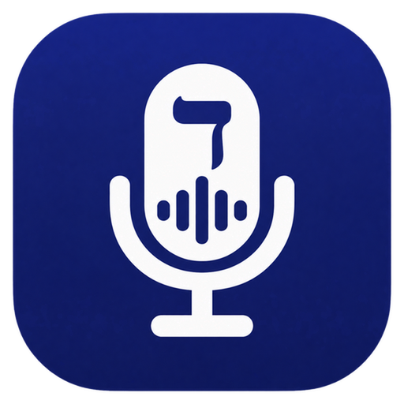

הקלדה קולית בעברית ובערבית, על ה-Mac שלך
חינם · קוד פתוח · עובד אופלייןלא בטוחים איזה Mac יש לכם? בדקו כאן · כל הגרסאות ב-GitHub
דקה אחת ואתם מוכנים.
דיבור צריכה שתי הרשאות מערכת כדי להקשיב ולהקליד עבורכם.
עובד בכל אפליקציה, בכל שדה טקסט.
הזיהוי רץ על המחשב עצמו. השמע שלכם לא יוצא לשום שרת.
מודל הדיבור של ivrit-ai מובנה, עם ניקוד תקין של פיסוק וסגנון.
מייל, הודעות, מסמכים, קוד - כל מקום שמקלידים בו, אפשר לדבר.